Sewing Projects
Bags and Accesories
A showcasing of sewing projects from beginning to end. Each project is designed, cut, and sewn by me. (Each image includes a small description of the bag and its functions.
DYNAMIC BLACK AND WHITE TSUNO BAG
This pattern creates a tsuno bag which means the bag is tied at the top for adjustable sizing
Bag Stand-Alone
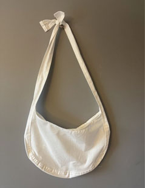
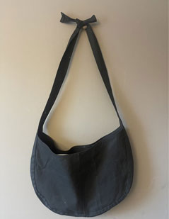
Bag Modeled
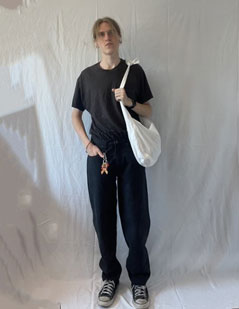
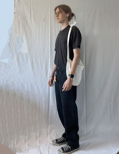
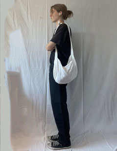
UPCYCLED MILITARY BAG
This bag was upcycled from an old waterproof military bad to create a small/medium sized bag that can be carried
Bag Stand-Alone
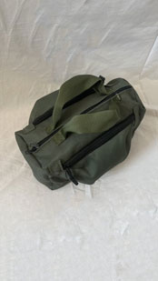
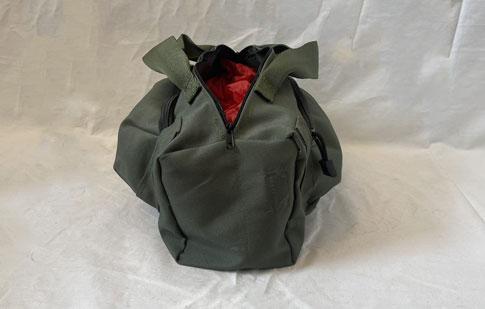
Bag Modeled
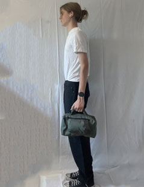
UPCYCLED MILITARY BAG #2
This bag was upcycled from an unused vintage military bag from the 80's. The bag can be worn over your shoulder and is perfect size for a book or any small items you'd like to carry with you
Bag Stand-Alone
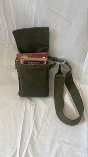
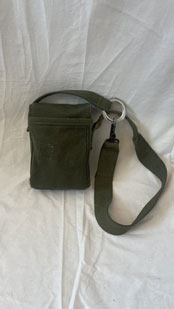
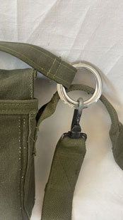
Bag Modeled
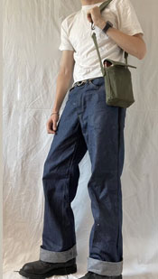
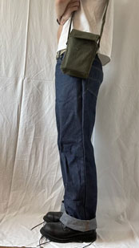
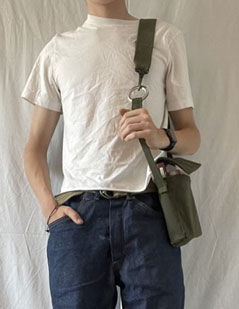
CROSSBODY SLING BAG
This is a crossbody bag that can be slung over the shoulder. It features a zipper on the top, and an adjustbale strap to fit anybodys body
Bag Stand-Alone
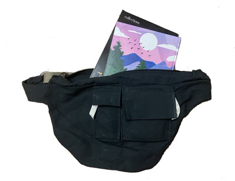
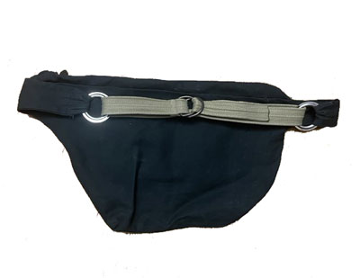
Bag Modeled
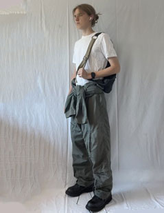
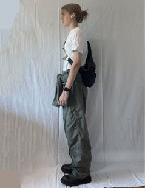
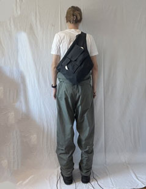
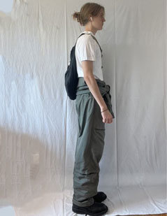
Clothing
A showcasing of sewing projects from beginning to end Each project is designed and sewn by me.
CORDUROY JACKET
I created a pattern for this jacket after drawing up the design in my sketchbook. I then sourced the fabric and sewed this jacket together. The jacket has two welt pockets, a silky lining, and a heavy duty zipper closure
Jacket Stand-Alone
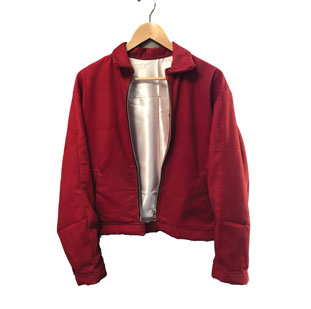
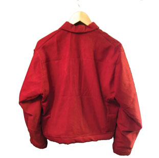
Jacket Modeled
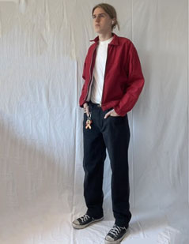
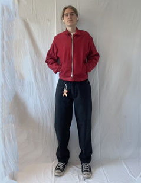
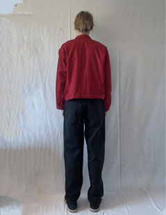
CORDUROY BELLBOTTOMS
I created a pattern for these pants after drawing up the design in my sketchbook. I then sourced the fabric and sewed these pants together.The pants have two back pockets, two front pockets, a button fly, and feature a large flare at the bottom
Pants Modeled
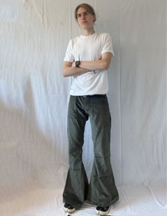
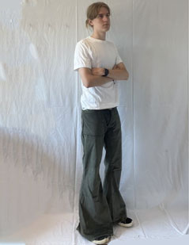
DENIM BELLBOTTOMS
I created a pattern for these pants after drawing up the design in my sketchbook. I then sourced the fabric and sewed these pants together.The pants have two back pockets, two front pockets, a button fly, and feature a large flare at the bottom
Pants Stand-Alone
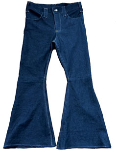
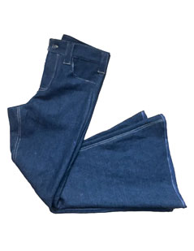